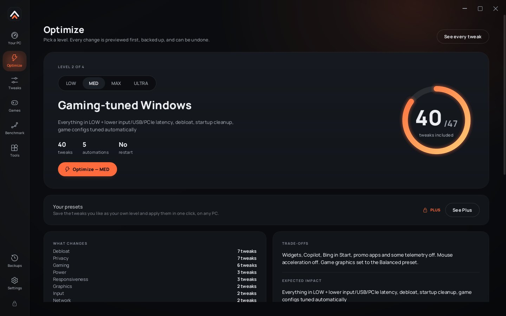
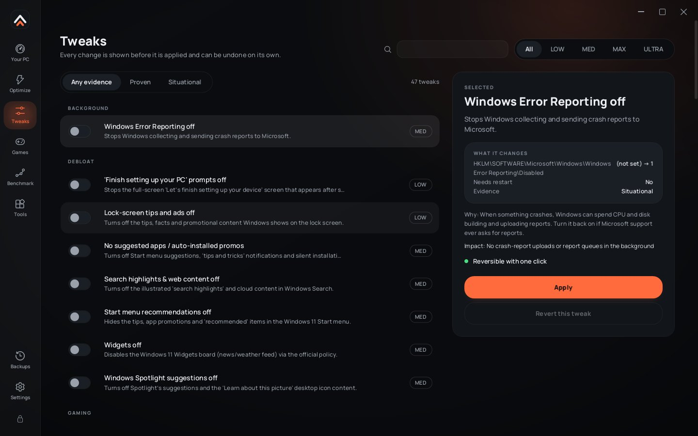

One app for the whole tune.
Free covers everything most PCs need. Plus adds ULTRA, the extra tweak pack and the deeper tools.
| Feature | Free | Plus |
|---|---|---|
| OptimizeLOW, MED and MAX levels with a full preview of every old and new value, a restore point and per-change backups. | ||
| ULTRA levelEverything in MAX plus the Plus tweak pack, each checked against your hardware and anti-cheat first. | ||
| Tweaks library47 free tweaks, each with what it changes, why, evidence rating and one-click revert. | ||
| Plus tweak pack19 more tweaks: timer resolution, MSI interrupts, core parking, network and memory tuning, the experimental pack. | ||
| Game configsCompetitive, Balanced and Visual presets plus a custom setup per game. | ||
| Game BoostPower plan, priority, muted notifications and pausing the apps you approve while a game runs. | ||
| Game Boost ProBackground apps in efficiency mode, standby RAM clean-up when memory runs low, and a held 0.5 ms timer. | ||
| Benchmark LabPresentMon frame-time capture, 1% and 0.1% lows, stutter and before/after comparison. | ||
| Bottleneck DoctorReads a run and tells you whether the CPU or the GPU held FPS back, and what to change first. | ||
| Health checkRefresh rate, RAM speed, Resizable BAR, display port, VBS and more, with one-click fixes. | ||
| Crosshair overlayCross and dot styles, colour, size, gap and outline. Toggle with Ctrl+Alt+X. | ||
| Crosshair extrasMore styles, opacity, show only in-game, and pixel nudging. | ||
| Custom presetsSave the tweaks you like as your own level and apply them on any PC in one click. | ||
| Share codesCopy your whole setup as a short code for Discord. Profile files stay free. | ||
| Revert, backups, restore pointsRevert any change on its own, or everything at once. Free forever, can never be locked. |
And the rest of the toolbox.
Stretched resolutions
Creates 1750×1080, 1650×1080 and others through the NVIDIA driver, with an automatic revert if you don't confirm.
Network
DNS benchmark across Cloudflare, Google, Quad9 and your current DNS, ping and jitter tests, one-click switch and restore.
Cleaner
Temp files, update caches, crash dumps and optionally shader caches, with live sizes.
System
Curated debloat, startup apps, services set to Manual (never Disabled) and privacy switches.
Color
Digital vibrance and display color, restored when TORQUE exits if you want.
Lock and exclusions
Optional launch password, plus a list of folders, apps and services TORQUE must never touch.

Optimize
Pick a level, see exactly what changes, apply it in one pass.

Tweaks
Every tweak with its evidence rating, old and new values, and its own revert.